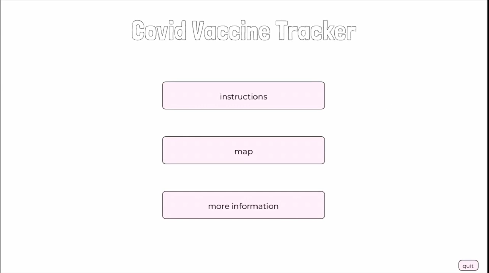
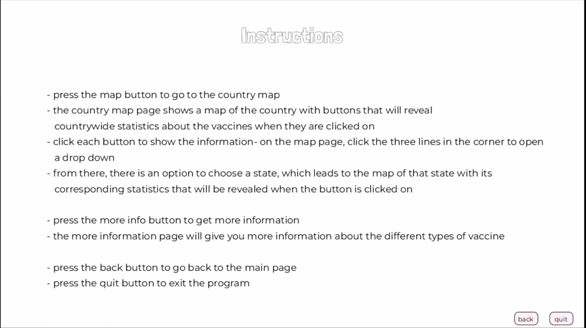
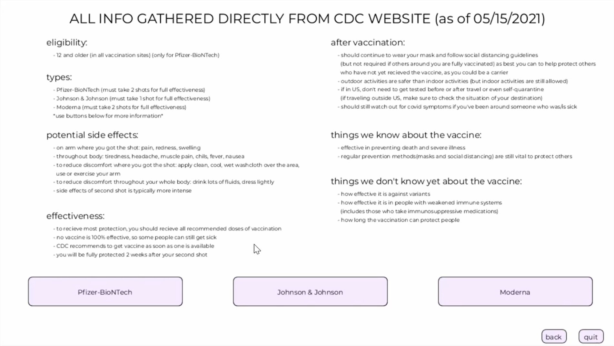
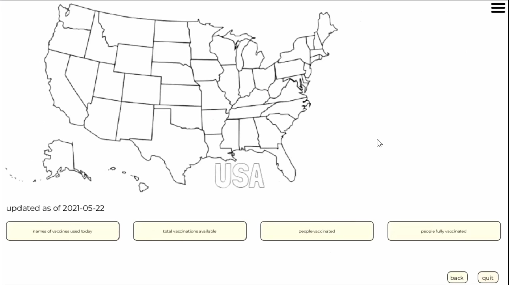
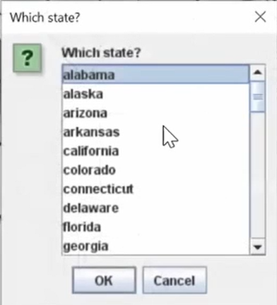
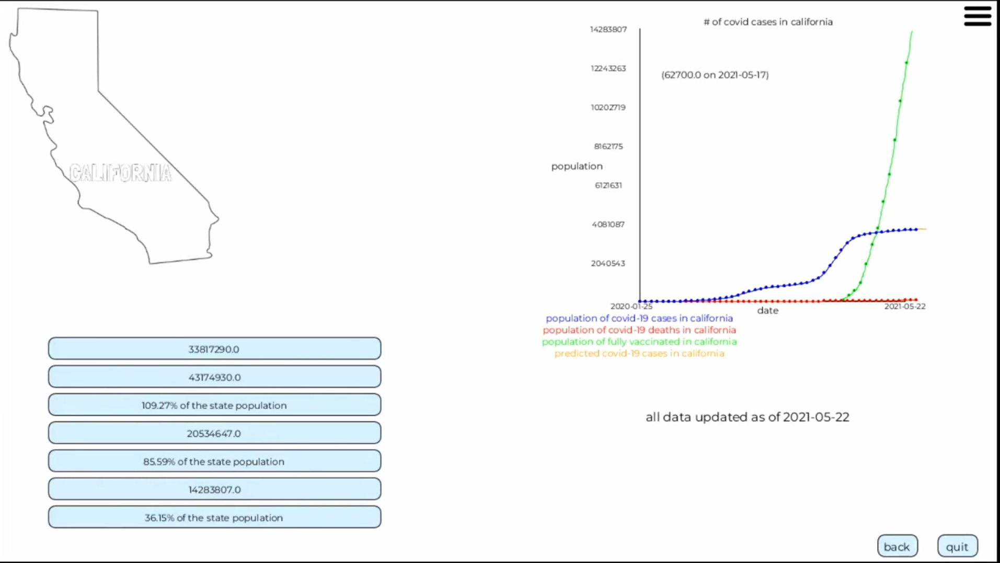

Data Visualization · High School Capstone · 2022
An interactive map dashboard pulling real-time CDC data on COVID cases, vaccines administered, and brand-specific statistics — making pandemic data accessible and understandable at a glance.
📦 Archived project. Data was sourced from CDC API endpoints in 2021–2022. Those endpoints have since been restructured or retired, so the live data feed no longer functions — but the interface and logic remain as originally built.
What it does
A visual, state-by-state map showing COVID case counts and vaccination progress across the US — click any state to drill into that state's detailed statistics and trend charts.
Real-time data on total doses administered, percentage of population vaccinated, distribution percentages, and breakdown by dose number — pulled directly from the CDC's public API.
Detailed fact cards for each authorized vaccine — Pfizer-BioNTech, Moderna, and J&J — covering efficacy rates, eligibility, side effects, and dosing schedules sourced from the CDC.
Per-state line charts tracking COVID cases, deaths, fully vaccinated population, and predicted case trajectories over time — with hover tooltips showing exact figures by date.
How it works
On launch, the app makes HTTP requests to CDC public endpoints to pull the latest vaccination and case records for every US state and territory.
The JSON response is mapped into structured Java objects — one per state — containing case totals, dose counts, and brand-level distribution figures.
The national map renders with click-through state navigation. A hamburger menu lets users jump directly to any state from a scrollable list.
Click stat buttons to reveal figures, view trend charts with multi-line overlays, and browse brand-specific vaccine fact sheets — all in one app.
Tech stack
Demo
The home screen offers three paths: instructions, the map dashboard, or the vaccine info pages.
The map view shows the full USA with national-level stat buttons and a hamburger menu to pick any state.
Select a state to see its outline, clickable stat buttons, and a live multi-line trend chart on the right.
The More Information page breaks down eligibility, side effects, effectiveness, and brand profiles from the CDC.






Open source
The full project is available on GitHub. Browse the source, fork it, or reach out to collaborate.